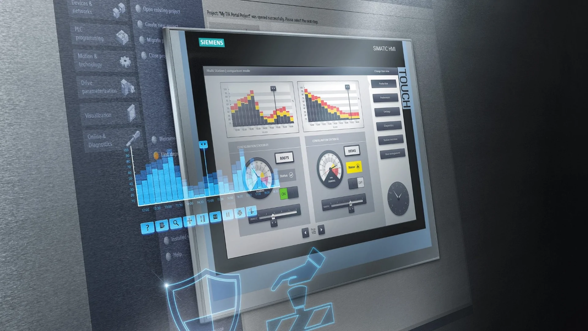

Definición Iteracción Hombre-Maquina (HMI)
La palabra Interacción, sencillamente, refiere a un sistema previo que puede organizarse
de manera formal o informal y por ello, se menciona que la interacción, en dicho sistema,
realiza procesos de intercambio en sentido amplio.
En el tema que nos ocupa, la Interacción,
es un término que se refiere a una relación dada entre el ser humano o la persona y la máquina
a través de una interface. Nuestra definición está configurada en la comprensión que lleva al
ser humano a realizar una extensión de sus capacidades.
Por la extensión de nuestras capacidades
por medio de las máquinas, se entiende las ventajas que dan al ser humano para realizar otras
tareas concomitantes, dejando las rutinarias o de tipo autómata a las máquinas. Además por
extensión se comprende la posibilidad de realizar tareas que comprendas a las máquinas como
interface para la comunicación directa o indirecta con otros seres humanos.
En esta relación de hombres o personas y máquinas, se comprende que las interacciones en sí,
se relacionan con los procesos internos automáticos del ser humano. Estos procesos internos
son rutinas de procesamientos de la información, así las máquinas llevan en sí algoritmos que
procuran mejorar el desempeño de la persona y aumentar su inteligencia, como asimismo sus niveles
de conciencia, dado que las personas utilizan las máquinas para su uso personal.
Todavía no hay una definición concreta para el conjunto de conceptos que forman
el área de la interacción hombre-máquina. En términos generales, podríamos decir que es la
disciplina que estudia el intercambio de información entre las personas y los computadores.
Ésta se encarga del diseño, evaluación e implementación de los aparatos tecnológicos interactivos,
estudiando el mayor número de casos que les pueda llegar a afectar. El objetivo es que el
intercambio sea más eficiente: minimizar errores, incrementar la satisfacción, disminuir la
frustración y, en definitiva, hacer más productivas las tareas que rodean a las personas y los
computadores.
Relación entre HMI y diseño gráfico
Teniendo en cuenta que el Interfaz Hombre-Máquina (HMI) es el interfaz entre el proceso
y los operario; se trata básicamente de un panel de instrumentos del operario.
Es la principal herramienta utilizada por operarios y supervisores de línea para coordinar
y controlar procesos industriales y de fabricación.
Mientras tanto el diseño grafgico se encargha satisfacer las necesidades de comunicación visual con un fin específico,
como por ejemplo, la publicidad. Se ocupa de organizar las imágenes y los textos, producidos en general por medios industriales, para comunicar
un mensaje específico a un determinado grupo social y con objetivos claros y definidos.
Esto lo hacen un gran complemento ya que se puede aplicar un buen diseño ya sea manual o utilizando las herramientas digitales
HMI puede plasmar el diseño porque es el punto de contacto entre los usuarios y las máquinas.
